java+appium+安卓模拟器实现app自动化Demo¶

环境搭建¶
据说，很多人都被繁琐的环境搭建给吓到了。
是的，确实，繁琐。
JDK¶
下载地址：
https://www.oracle.com/technetwork/java/javase/downloads/jdk8-downloads-2133151.html
百度一下“配置Java”，配置环境变量。
cmd 输入 java -version，出现下图说明成功：
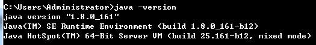
Android SDK¶
下载地址：
https://www.androiddevtools.cn/
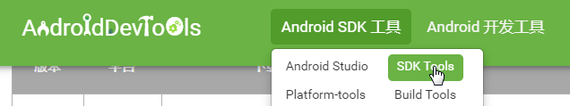
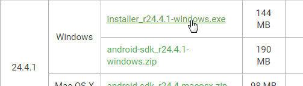
百度一下“配置Android SDK环境变量”。
cmd 输入 adb，出现下图说明成功：
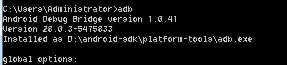
Appium Desktop¶
下载地址：
https://github.com/appium/appium-desktop/releases
或
https://testerhome.com/topics/680
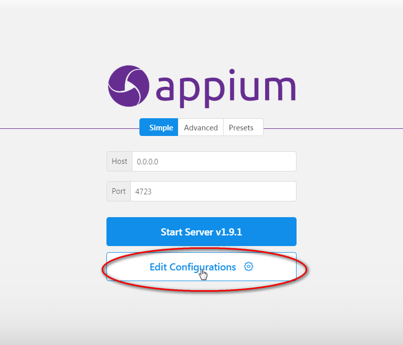
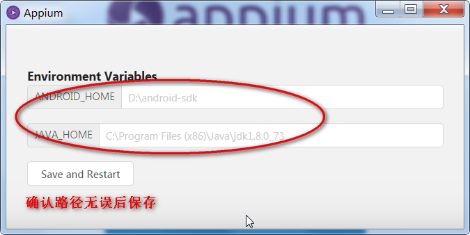
Maven¶
下载地址：
http://maven.apache.org/download.cgi
百度一下“ maven环境配置”。
cmd 输入 mvn -version，出现下图说明成功：
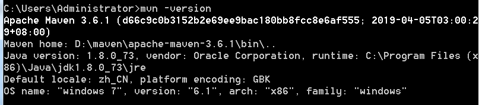
安卓模拟器¶
下载地址：
把 Android SDK 目录下 \platform-tool 的 adb.exe 拷贝。
打开 Nox\bin 目录，粘贴替换 adb.exe。
打开模拟器。
cmd 输入 adb connect 127.0.0.1:62001，如下：
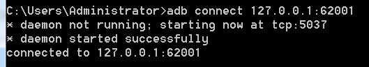
再输入 adb devices，如下
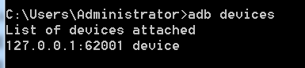
实现步骤¶
打开 IntelliJ。
创建 maven 项目：
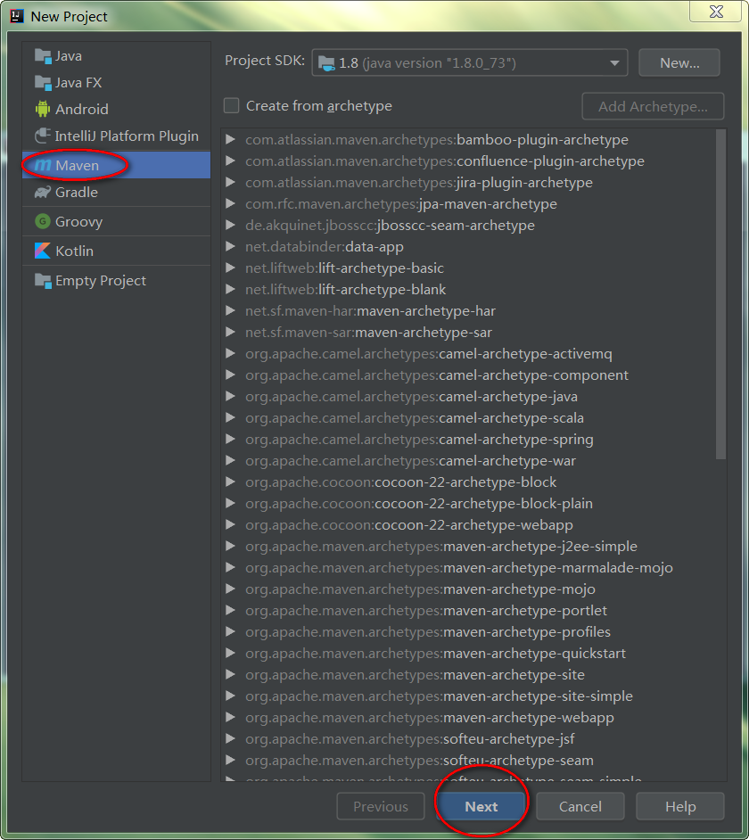
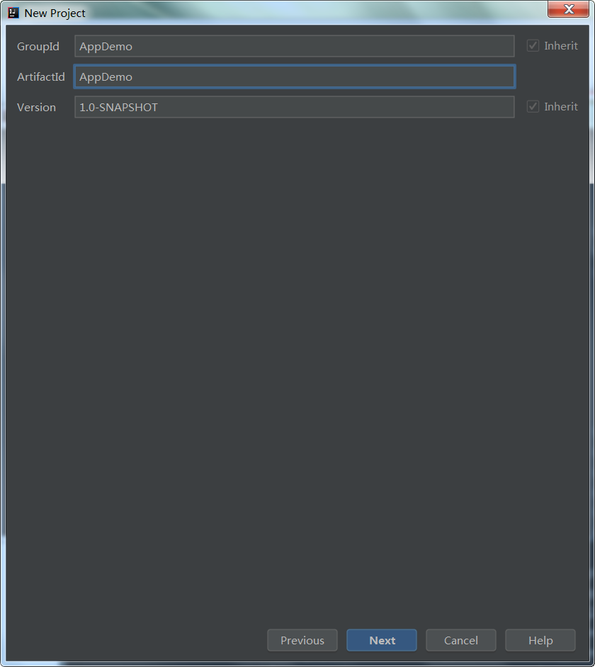
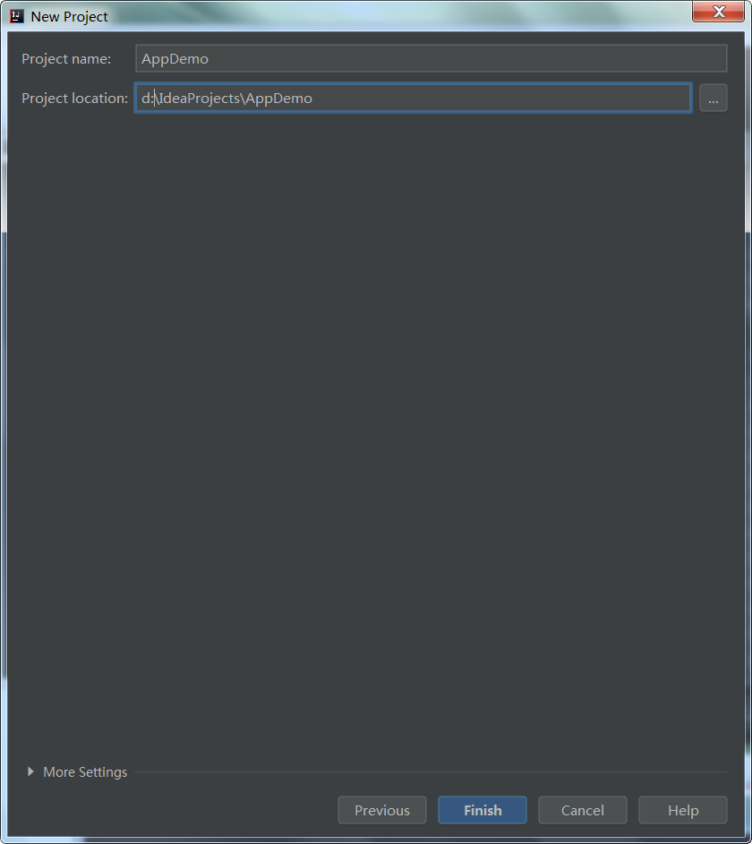
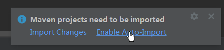
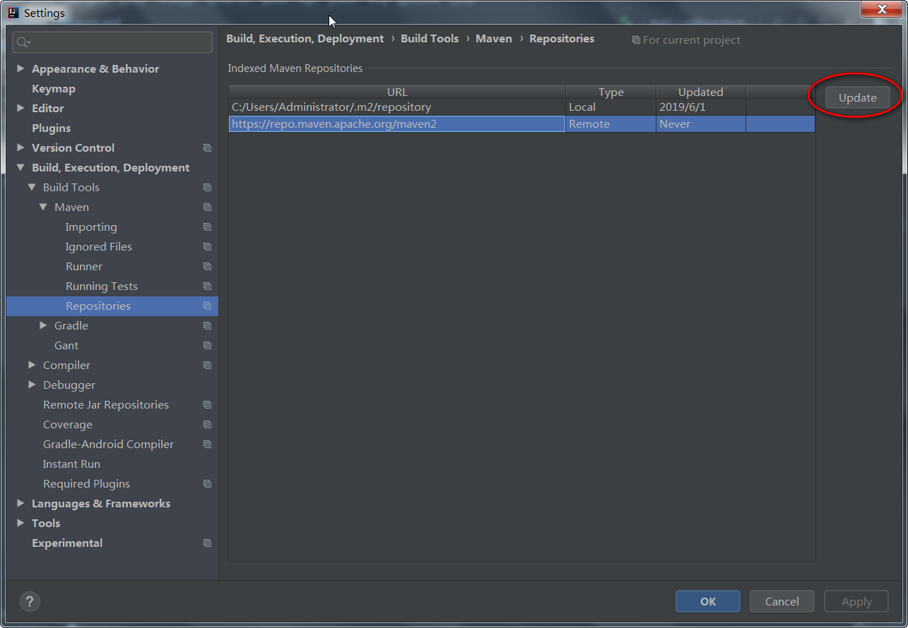
点击 ok 后，复制下面代码到 pom.xm 中：
<dependencies>
<dependency>
<groupId>io.appium</groupId>
<artifactId>java-client</artifactId>
<version>4.1.2</version>
</dependency>
<dependency>
<groupId>org.testng</groupId>
<artifactId>testng</artifactId>
<version>6.14.2</version>
</dependency>
</dependencies>
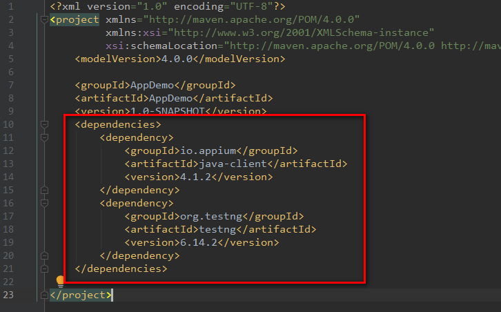
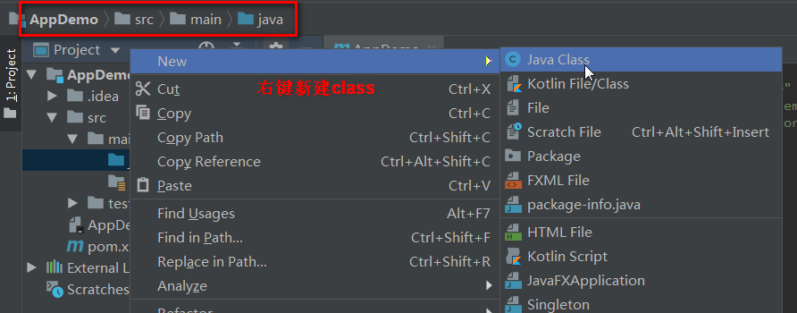 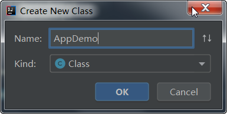
复制粘贴下面代码：
import org.testng.annotations.Test;
import org.testng.annotations.BeforeClass;
import org.testng.annotations.AfterClass;
import io.appium.java_client.AppiumDriver;
import io.appium.java_client.android.AndroidDriver;
import java.net.URL;
import org.openqa.selenium.remote.CapabilityType;
import org.openqa.selenium.remote.DesiredCapabilities;
public class AppDemo {
private AppiumDriver driver;
@BeforeClass
public void setup() throws Exception {
DesiredCapabilities cap = new DesiredCapabilities();
cap.setCapability(CapabilityType.BROWSER_NAME, "");
cap.setCapability("platformName", "Android"); //指定测试平台
cap.setCapability("deviceName", "127.0.0.1:62001"); //指定测试机的ID,通过adb命令`adb devices`获取
cap.setCapability("platformVersion", "5.1.1");
//将上面获取到的包名和Activity名设置为值
cap.setCapability("appPackage", "com.youdao.calculator");
cap.setCapability("appActivity", "com.youdao.calculator.activities.MainActivity");
// //A new session could not be created的解决方法
// cap.setCapability("appWaitActivity", "com.meizu.flyme.calculator.Calculator");
// //每次启动时覆盖session，否则第二次后运行会报错不能新建session
// cap.setCapability("sessionOverride", true);
driver = new AndroidDriver(new URL("http://127.0.0.1:4723/wd/hub"), cap);
}
@Test
public void plus() throws Exception {
Thread.sleep(3000);
int width = driver.manage().window().getSize().width;
int height = driver.manage().window().getSize().height;
int x0 = (int)(width * 0.8); // 起始x坐标
int x1 = (int)(height * 0.2); // 终止x坐标
int y = (int)(height * 0.5); // y坐标
for (int i=0; i<5; i++) {
driver.swipe(x0, y, x1, y, 500);
Thread.sleep(1000);
}
driver.findElementById("com.youdao.calculator:id/guide_button").click();
for (int i=0; i<6; i++) {
driver.findElementByXPath("//android.webkit.WebView[@text='Mathbot Editor']").click();
Thread.sleep(1000);
}
String btn_xpath = "//*[@resource-id='com.youdao.calculator:id/view_pager_keyboard']/android.widget.GridView/android.widget.FrameLayout[%d]/android.widget.FrameLayout";
driver.findElementByXPath(String.format(btn_xpath, 7)).click();
driver.findElementByXPath(String.format(btn_xpath, 10)).click();
driver.findElementByXPath(String.format(btn_xpath, 8)).click();
Thread.sleep(3000);
}
@AfterClass
public void tearDown() throws Exception {
driver.quit();
}
}
文件右键 run：
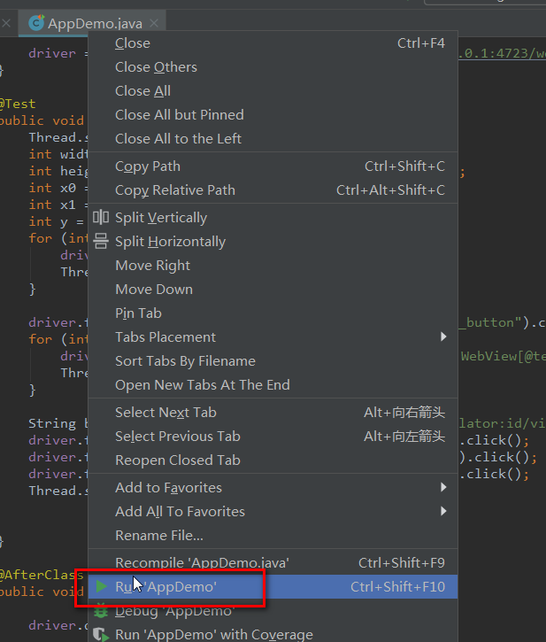
然后可以看到脚本在跑了，
打开安卓模拟器，
一会就看到，
计算器 app 在自己动了！